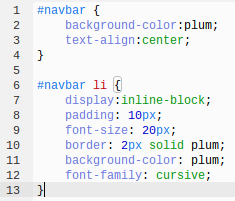
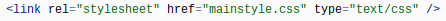
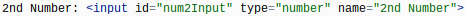
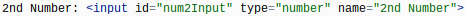
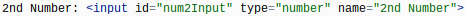

The purpose of this page is to help you understand the steps I took to make the calculator for my website.
Steps I took:
The first thing I did was make two new files, a html and a javascript. The html for the look and style of the calculator and the javascript in order for the calculator to work and function properly. I titled them calc.html and calc.js. Just like the other pages, I made a mainstyle.css file to style my page with the background color, text-alignment, a border at the top, and font. I used the code below for the mainstyle.

I linked my mainstyle to the calc.html file so that it would connect to the page.

The first main step I used in order to make the calculator was make two inputs for numbers in the html file (calc.html). These inputs are for the two number that the user would insert in order to calculate them. These are the following codes I used:

Afterwards, I made a dropdown menu so the user could pick which 1 operation out of the 6, they want to use to calculate two numbers.
Then, I made a button which the user would then click on after typing in their numbers and picking the operation they want in order to calculate the numbers. Under that, I made a div so the answer would appear under the button once clicked.
At the very bottom of all of the html, after all the coding, I made a script that connects the javscript file to the html file. The javascript is the part of the coding that actually makes the button work for the calculator.
Once all those steps were done, I moved on to the Javascript. In the javscript (calc.js), I made variables and got each of the elements from the html using getElementById.
Beneath this, I made a code that reveals when the button is clicked on by using the addEventListener.
Next, I made variables and put the user inputted values into it. The input value boxes are for the user to put the numbers in so that they can calculate them together using 1 of the 6 operations (+, -, *, /, %, or ^).
Lastly, I made conditional statements (a.k.a. - if and else statements) which control the use of each operatiion and used the user values to decide the answer of the two numbers that display it.

 
